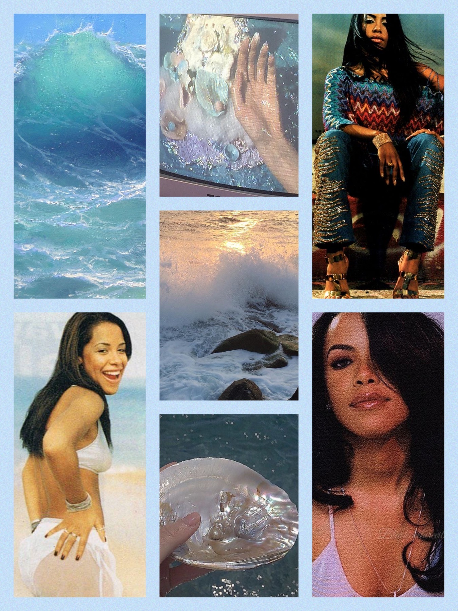
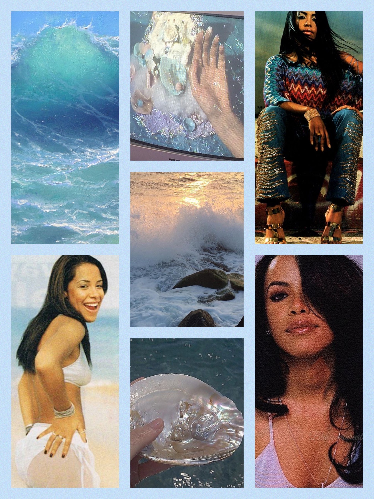

FLO MILLI POSTER REDESIGN
Timeline
approximately 3 hours
Original Poster Analysis
In the initial phase, I examined the existing poster with the primary goal of promoting the show and cultivating a wider audience. While I appreciated its boldness, the random fonts and the overall boxy structure left me wanting to create a more refined aesthetic. Although it effectively highlighted key elements such as Flo Milli's image and event details, the design felt cluttered in the wrong places.
Design Process:
Inspired by a desire for modernity and a cooler colour palette, I thought of a redesign that would resonate better with contemporary tastes. Going for shades of blue and chrome, I chose a chrome font, to infuse vibrancy and make key elements stand out. This, paired with a softer design (moving away from excessive boxiness), laid the foundation for a more visually appealing design.
Development Process
The whole process involved deconstructing the original poster, identifying its strengths and weaknesses. I took my time to select the colour scheme, fonts, and aesthetic refining the layout creating balance between vibrancy and modernity. I created more assets for my poster and then finally putting the poster together, that I pixelated and filtered to achieve the desired vintage appeal while maintaining its contemporary edge.
 
